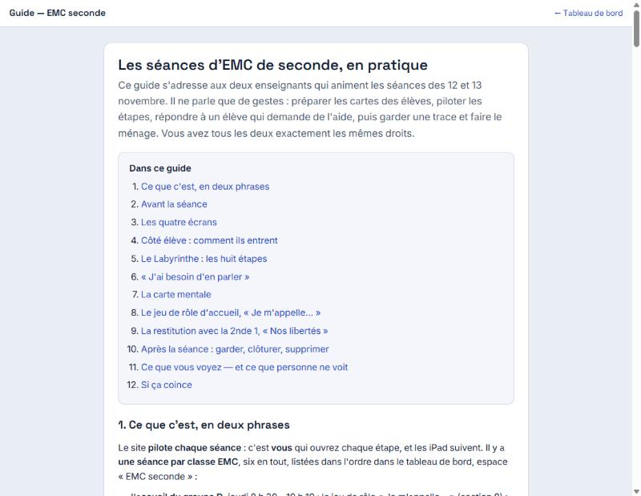
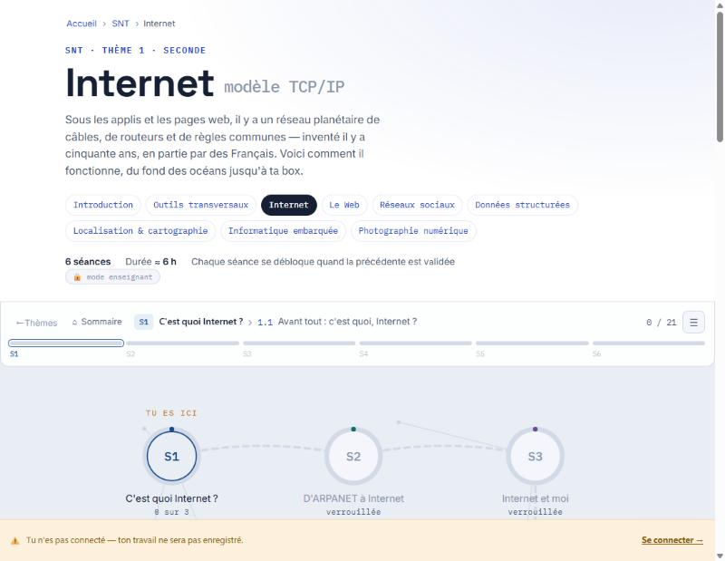
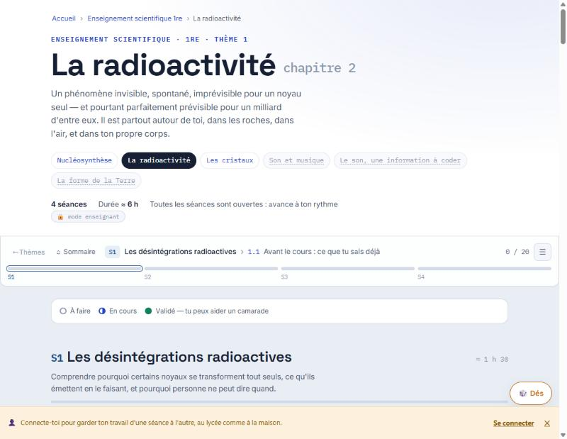
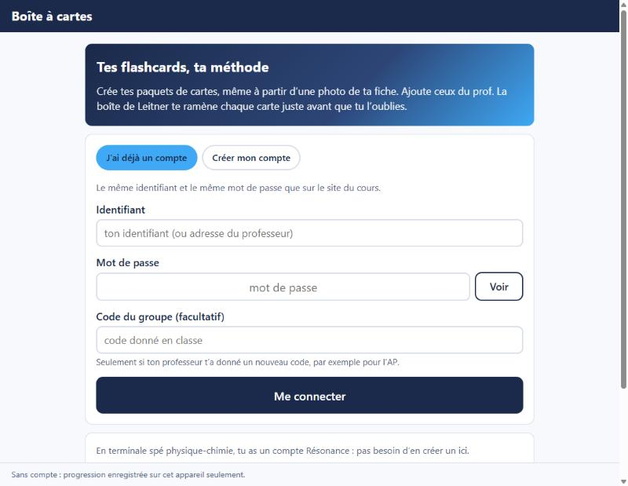
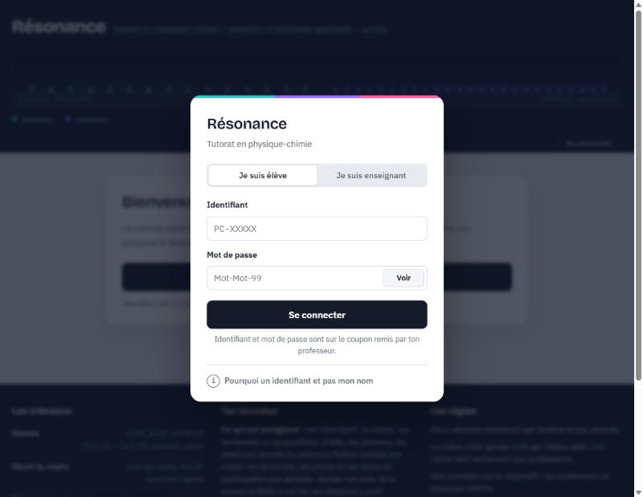
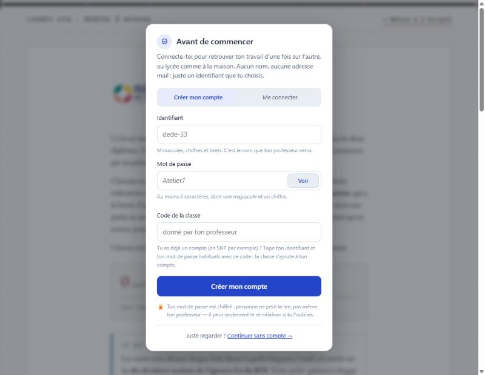
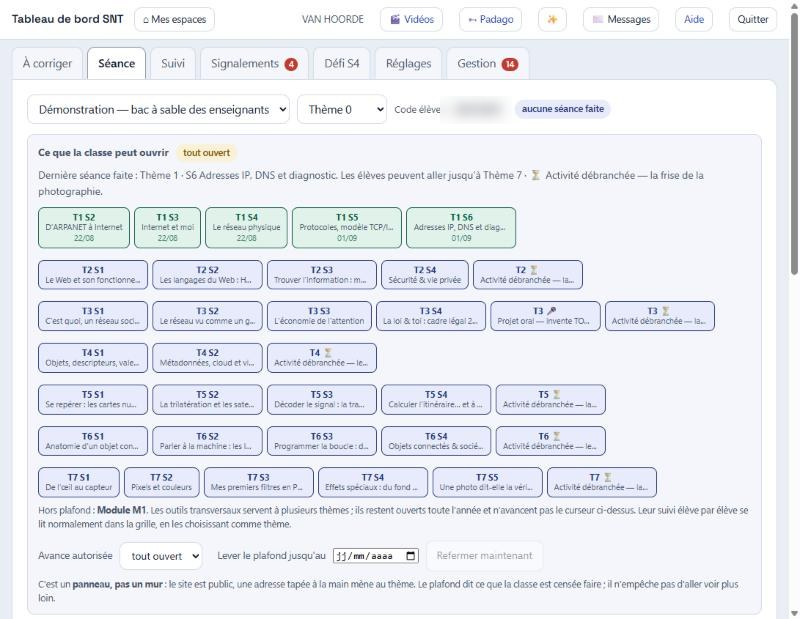
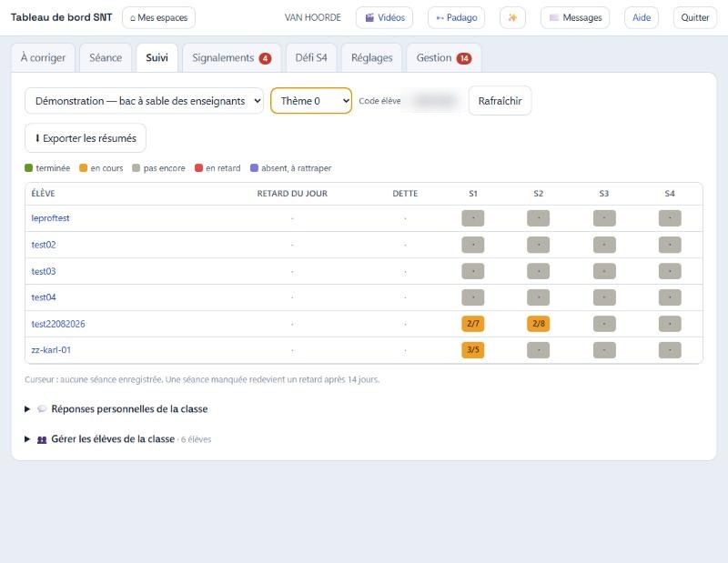
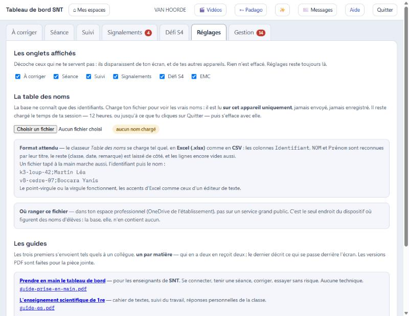
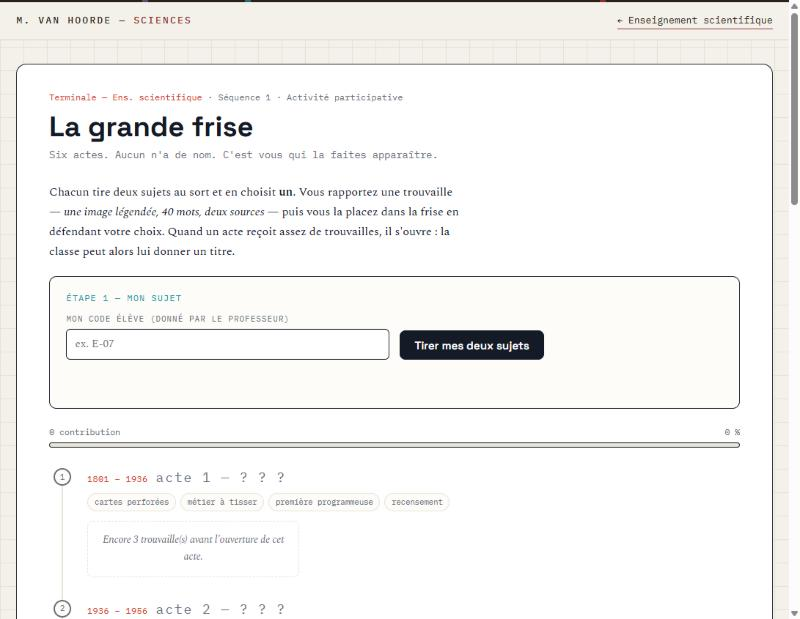

Pedagonum se renouvelle. Cette page présente, en images, ce que j'ai construit avec mes classes : ce que voient les élèves, ce que voit l'enseignant, et surtout ce qui permet de travailler à plusieurs. C'est une base pour lancer la discussion, pas un modèle à suivre : vos pratiques à vous comptent tout autant.
Salle de réunion (sous réserve). Venez quand vous pouvez, même dix minutes.
Rien de tout cela n'est réservé à un seul enseignant. Les outils ont été construits pour qu'un collègue puisse s'en emparer sans formation préalable.

Les élèves avancent à leur rythme, au lycée comme à la maison. Ils se connectent avec un identifiant, jamais avec leur nom.





Captures prises dans la classe de démonstration : aucun élève réel n'apparaît.




L'IA sert ici d'assistant de préparation : elle propose un premier jet, l'enseignant relit, corrige et décide.
Et surtout : vos idées, vos envies, vos craintes et vos talents à vous.